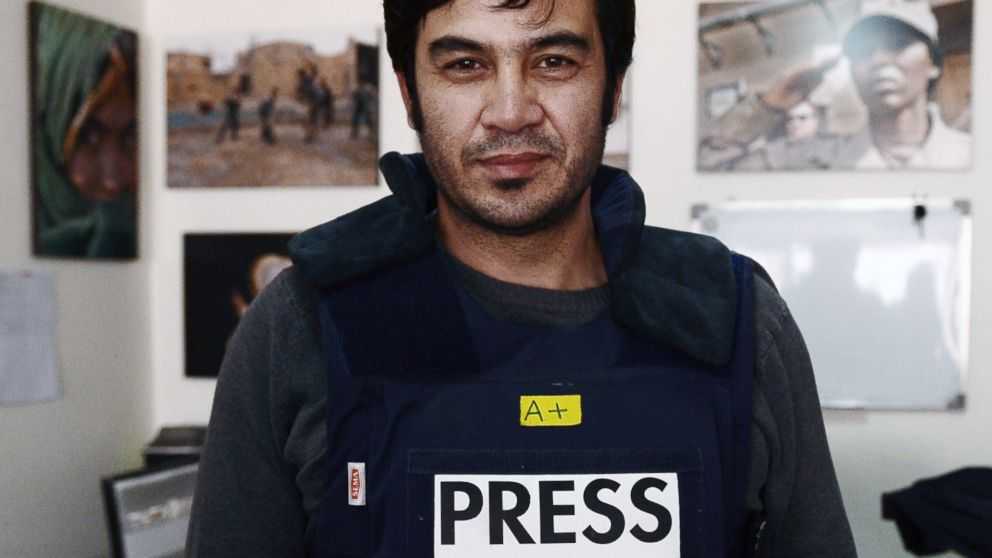

 Сардар Ахмад, загинал при нападение над хотела му в Кабул на 20 март 2014 г. Снимка: Wakil Kohsar/AFP/Getty Images
World Press Freedom Day
Днес се отбелязва Световният ден на свободата на печата.
Днес си припомняме каква роля, власт и сила имат медиите в днешното общество. Припомняме си колко е важно те да са максимално безпристрастни, максимално независими и същевременно максимално безкомпромисни.
Днес отделете няколко минути да си представите едно общество с изцяло зависими медии. Общество без никаква свобода на словото. Предвид ситуацията у нас, не вярвам да ви е трудно. След това помислите за тези неща:
- Интересува ли ви независимостта на медиите, или това е нещо, за което не може нищо да направите?
- Засягат ли ви техните проблеми, или това са чужди грижи?
- Дали бихте искали да помогнете по някакъв начин, дори да не се сещате какъв. Аз имам някои идеи. Ако ви е интересно, може да ми пишете.
Не на последно място, искам да благодаря на всеки един от вас – познат или не – който все още вярва в идеала на журналистиката. Всеки от вас, правещ жертви в името на този идеал. Всеки от вас, който въпреки всичко, продължава да се бори за независимостта и обективността. Благодаря!